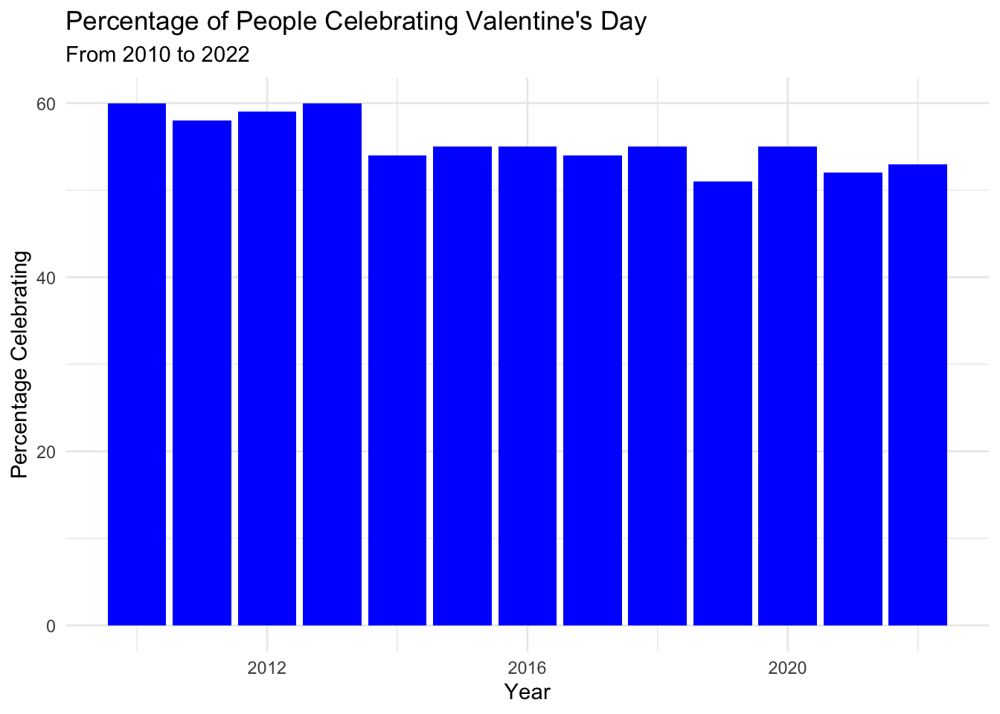

library(tidyverse)scale_fill_gradient2(low = “blue”, mid = “grey”, high = “red”, )
Introduction
This is a dataset form the Tidy Tuesday Github about Valentine’s Day consumers. There are three datasets, historical_spending, gifts_age, and gifts_gender. historical_spending is data on the money spent on Valentine’s Day gifts from 2010 to 2022. Year is the year, PercentCelebrating is the percent of people celebrating, and all the other columns is the average amount of money spent by people on that item. gifts_age has data on how much money different age groups are spending on Valentine’s Day, and how much they spend on what items. Age is the age range, SpendingCelebrating is the percent of that group that is spending money on, or is celebrating, Valentines Day, the other columns are the average percent spending money on that item. gifts_gender is data on men’s vs womens’ spending on Valentine’s Day. The columns are the same as gifts_age, except the age column is replaces with gender.
Ill be making some plots to show a comparison between each datasets main focus (over time, between different age groups, and by gender) and examine how spending changes.
Data Source: https://github.com/rfordatascience/tidytuesday/blob/master/data/2024/2024-02-13/readme.md
historical_spending <- readr::read_csv('https://raw.githubusercontent.com/rfordatascience/tidytuesday/master/data/2024/2024-02-13/historical_spending.csv')
gifts_age <- readr::read_csv('https://raw.githubusercontent.com/rfordatascience/tidytuesday/master/data/2024/2024-02-13/gifts_age.csv')
gifts_gender <- readr::read_csv('https://raw.githubusercontent.com/rfordatascience/tidytuesday/master/data/2024/2024-02-13/gifts_gender.csv')historical_spending# A tibble: 13 × 10
Year PercentCelebrating PerPerson Candy Flowers Jewelry GreetingCards
<dbl> <dbl> <dbl> <dbl> <dbl> <dbl> <dbl>
1 2010 60 103 8.6 12.3 21.5 5.91
2 2011 58 116. 10.8 12.6 26.2 8.09
3 2012 59 126. 10.8 13.5 29.6 6.93
4 2013 60 131. 11.6 13.5 30.9 8.32
5 2014 54 134. 10.8 15 30.6 7.97
6 2015 55 142. 12.7 15.7 36.3 7.87
7 2016 55 147. 13.1 14.8 33.1 8.52
8 2017 54 137. 12.7 14.6 32.3 7.36
9 2018 55 144. 13.1 14.8 34.1 6.55
10 2019 51 162. 14.1 15.1 30.3 7.31
11 2020 55 196. 17.3 16.5 41.6 9.01
12 2021 52 165. 15.3 15.4 30.7 8.48
13 2022 53 175. 15.9 16.7 45.8 7.47
# ℹ 3 more variables: EveningOut <dbl>, Clothing <dbl>, GiftCards <dbl>gifts_age# A tibble: 6 × 9
Age SpendingCelebrating Candy Flowers Jewelry GreetingCards EveningOut
<chr> <dbl> <dbl> <dbl> <dbl> <dbl> <dbl>
1 18-24 51 70 50 33 33 41
2 25-34 40 62 44 34 33 37
3 35-44 31 58 41 29 42 30
4 45-54 19 60 37 20 42 31
5 55-64 18 50 32 13 43 29
6 65+ 13 42 25 8 44 24
# ℹ 2 more variables: Clothing <dbl>, GiftCards <dbl>gifts_gender# A tibble: 2 × 9
Gender SpendingCelebrating Candy Flowers Jewelry GreetingCards EveningOut
<chr> <dbl> <dbl> <dbl> <dbl> <dbl> <dbl>
1 Men 27 52 56 30 37 33
2 Women 27 59 19 14 43 29
# ℹ 2 more variables: Clothing <dbl>, GiftCards <dbl>Primary Visualizations
toy_df <- historical_spending |>
mutate(Year = fct_recode(as.factor(Year)))
ggplot(data = toy_df, aes(x = Year, y = PercentCelebrating)) +
geom_point()